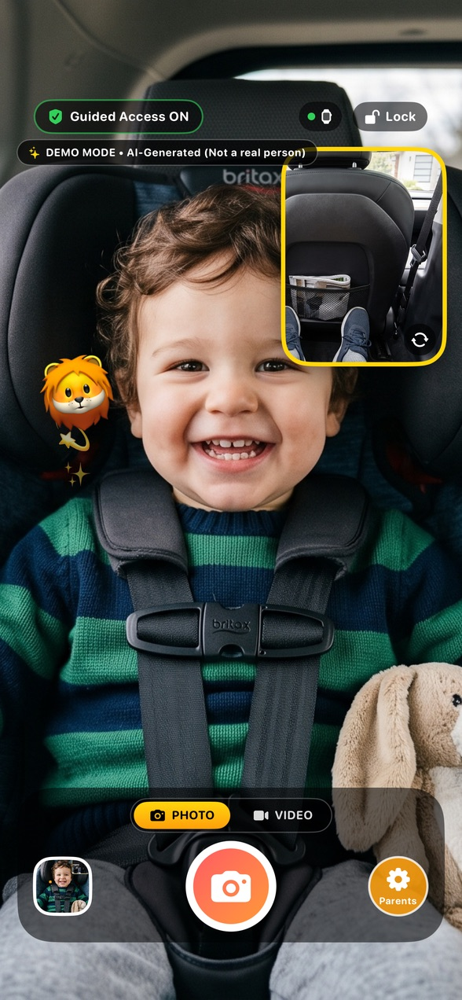
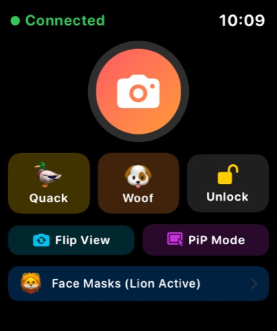
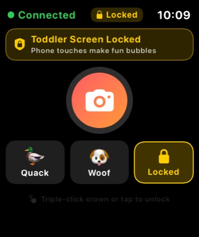
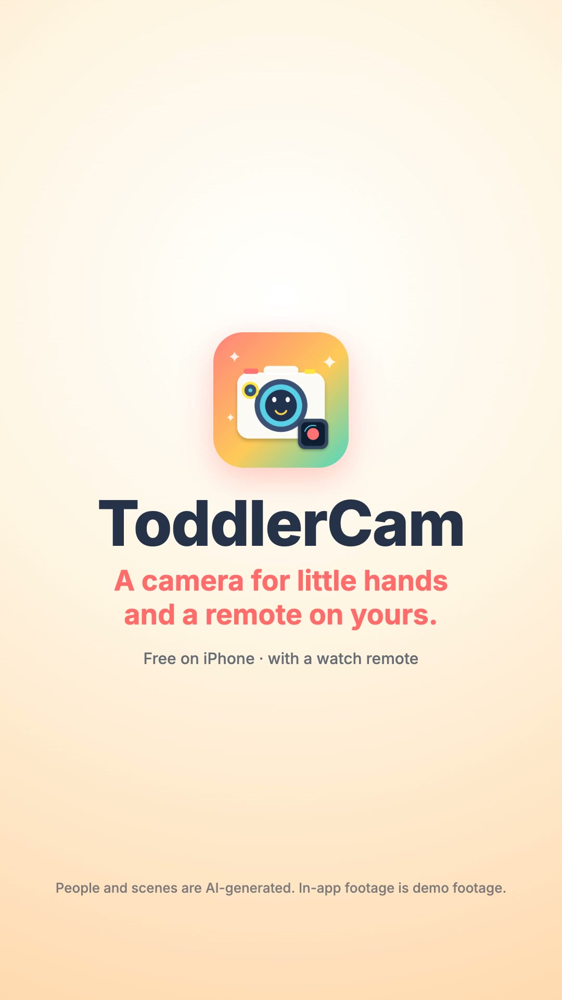

ToddlerCam's promo is cut: a 30-second family comedy, plus 15-second cuts in 16:9 and 9:16, made from your seven Flow shots and music, recordings of the real iPhone and Watch apps, and a Kokoro narration as Nora. Nora can't get Milo to look at her camera; he grabs the phone ("Mine!"), so he gets his own. ToddlerCam shows what he sees and his face at once, Nora's watch quacks so he looks up and takes the photo, his taps only make bubbles, and nothing leaves the phone. It ends on "Mommy!" and Nora's "Quack." The in-app footage is the same Milo and Nora: I fed frames of your shots into the app's simulator camera. Watch and listen in §1; the YouTube kit is in §10.
Story + scriptsAs planned; one beat cut (§1)
CharactersNora and Milo, on-model in all 7 shots
Flow shotsAll 7 used; every written line landed
Feed clipsNot needed: cut from your shots (§7)
Recordings5 made on paired simulators (§7)
Voiceoveraf_heart; 4 more voices to compare (§8)
Music30 s take 2 and the 15 s take, picked by measurement (§1)
EditRendered: your review with sound (§1)
YouTubeKit ready for all three cuts (§10)
Next for you: watch and listen to the three cuts in §1, and check the calls I made without you (the table under the videos). Write what to change in Your notes and click Copy summary, or just tell me. When a cut is right, upload it with §10 and send me the 30 s link: it goes on ToddlerCam's site and docs page. Also: Xcode updated itself to 27.2 during the session, and the simulators need sudo xcodebuild -runFirstLaunch before they work again (§12).
The edit: three cuts to review
Built in Remotion (branding/promo-videos/src/toddlercam-launch) from your seven Flow shots, take 2 of the 30 s music and the 15 s track, five recordings of the real iPhone and Watch apps, and the af_heart narration. The jokes are in Nora's and Milo's own Flow voices; the narration, as Nora, says what ToddlerCam does. The quack and the shutter are the app's own sounds.
Take 2 (≈112 BPM): it's the only take with the full stop the prompt asked for (take 1 is ≈99 BPM and never stops). The cut opens on its toy-piano intro, the groove hits on "Mine!", a jump of 20 beats puts the stop under the quack, and a second jump of 20 beats puts the track's last little break under "Quack." and its final hit on the end card. Picked by beat tracking and loudness, not by ear.
Say "take 1".
Music, 15 s
The one take you made (≈103 BPM): intro under the first two lines, the groove from "Mine!", its short stop on the quack, its ending under the tagline.
—
Narration voice
af_heart, the clearest of Kokoro's female voices. Nora's Flow lines are sing-song and shouted, so their pitch couldn't tell me which voice is closest (af_bella and af_heart measure about the same). Four more are in §8.
Name another voice.
Feed clips
You didn't make the two "feed clips" (§6), so I cut the app's camera feeds from your story shots: Milo laughing (shot 7), his surprised look and giggles (shot 5), Nora in the garden (shot 7) and the living room (shot 2).
Make them and I re-record.
The keepsake beat
Cut. The gallery shot (the dual keepsake photo) didn't work out: the take that reached the gallery had caught the back of Milo's head, and before I could redo it Xcode updated itself and the simulators stopped working. "No account, no ads. It all stays on the phone." now plays over shot 6 (the sofa) for its full length, which carries it well.
After the simulator fix (§12), say "add the keepsake".
The watch review
Cut. The simulated watch never received the photo ("No Photo Yet"), so the beat shows the photo landing on the phone instead, with its shutter flash.
—
The quack
The watch simulator doesn't show a button press, so a small tap ripple marks Quack where the test tapped it; then the app's own quack sound plays.
—
"Mommy! Look!"
Flow said only "Mommy!" (checked with speech recognition), so the caption says that.
—
Pace
Cuts sit on the music's beats (each planned cut moves to the nearest beat within 0.25 s). The quack beat (0:11–0:16) goes Nora's grin → the watch, Quack tapped → the music stops, the quack → Milo looks up → the shutter flash.
Transitions
A shot into its recording: a cross-zoom. Between beats: a blurred slide. Two moments of one recording: a quick fade. Into the end card: a dreamy zoom.
Captions
Every spoken word, word by word, timed from a speech-recognition pass. The end card carries the tagline instead of a caption.
Sound
Music ducks under every line; Flow's ad-libs (shots 3, 4, 6) are muted. The characters' lines were about 7 dB above the narration in the first render; they're now level with it. Loudness after a two-pass normalise: about −14 LUFS for all three, peaks below −1.4 dBFS.
On screen
"Demo footage" on every recording. End card: "People and scenes are AI-generated. In-app footage is demo footage." The watch simulator's clock is covered.
9:16
Flow shots centre-cropped (in shot 2, Milo's grab is at the left edge of the crop); the phone and watch are scaled up for the tall frame.
What I checked: frames every second of each render and closer looks at the quack and shutter; the subtitle text against the script; lengths and loudness; the level of each line in the mix. What I couldn't: listen. Please watch with sound, above all the balance between Flow's voices, the narration and the music, and whether af_heart sounds like the same woman as Nora on screen.
The renders are reproducible (npx remotion render toddlercam-launch-30 --concurrency=2 etc. in branding/promo-videos, then the loudness pass) and add tens of MB to this report, so media/edit/ stays out of git.
The story: the toddler who never looks at the camera
Every parent of a toddler has the same camera roll: the back of a head, a blur, a hand over the lens. Nora crouches in the living room, phone up, "Milo! Look at Mommy!", and Milo stares out of the window. When he finally turns round, it's to grab the phone: "Mine!" So he gets his own camera. Out in the yard he films everything; ToddlerCam records both cameras at once, so the photo has what he saw and his face when he saw it, with a lion mask that follows his head. Nora is a few steps behind, phone-free: one tap on her watch and the phone in his hands quacks, Milo looks up laughing, and she takes the photo from her wrist. When he discovers the screen and slaps it with both hands, it only makes bubbles. That evening on the sofa they look at the day's photos, which never left the phone. The payoff turns the opening around: Milo points the phone at his mom, "Mommy! Look!", and she gives him the best duck face of her life: "Quack."
Tagline (end card)
A camera for little hands, and a remote on yours.
On-camera lines (in the shot prompts, spoken in Flow)
Shot
Who
Line
1
Nora, sing-song, phone up
"Milo! Look at Mommy!"
2
Milo, grabbing the phone
"Mine!"
7
Milo, pointing the phone at her
"Mommy! Look!"
7
Nora, duck face
"Quack."
Narration (Nora, first person; between the lines above)
Narration, 30-second cut
Four hundred photos of the back of his head.
So we gave him his own camera.
Both cameras at once: what he sees, and his face.
My watch is the remote. One tap, it quacks, he looks. Snap.
He can tap all he likes. It only makes bubbles.
No account, no ads. It all stays on the phone.
ToddlerCam. A camera for little hands, and a remote on yours.
Narration, 15-second cut
So we gave him his own camera. Both sides at once.
My watch is the remote. One tap, it quacks, he looks. Snap.
ToddlerCam. A camera for little hands, and a remote on yours.
Small text on the end card
Free on iPhone, with a watch remote. People and scenes are AI-generated. In-app footage is demo footage.
Timing. At Kokoro's pace (about 2.8 words a second) the 30 s narration is about 22 s, plus 4 s of on-camera lines and the quack: 26–27 s of sound, as planned. The 15 s cut keeps "Milo! Look at Mommy!" and "Mine!" (shots 1 and 2), then the yard, the watch and the end card.
On camera vs narration. The lines above come from Flow in the characters' voices, lip-synced; the narration skips them. I pick the Kokoro voice closest to Nora's Flow voice (af_heart or af_bella for a warm, bright one) so she sounds like one person; if they don't match, the edit mutes Flow and her lines become captions. Milo's two lines are the risk (Flow's voices are adult voices): if no take sounds like a two-year-old, his lines become captions over a giggle.
Look and feel: a sunny Saturday at toddler height
ToddlerCam's own colours: warm paper, coral, sunny yellow and mint, from projects/toddlercam/site/styles.css. Bright, soft daylight, a real-looking modern family home with a small lawn, toys everywhere. The camera often sits low, at Milo's eye level. The evening scene (shot 6) goes warm and dim, like the site's navy.
Day (shots 1–5, 7)Soft Saturday sun, a living room with a play mat and a window onto the yard, a lawn with a red ball. Paper, coral, yellow, mint.
Evening (shot 6)A sofa under one warm lamp, a blanket, a sleepy toddler. Navy with amber light.
#fffaf2 paper#ff6b6b coral#ffa53e orange#ffd84d yellow#5fd4a0 mint#4fc3e8 sky#2e3a50 navy
Camera
Family-comedy framing: low angles at toddler height, quick push-ins on reactions, a held beat on every punchline (Nora's face after "Mine!", Milo's laugh after the quack, the duck face).
Wardrobe
In the brand colours: Milo in yellow dungarees over a mint-and-navy striped shirt; Nora in a sky-blue chambray shirt; her watch on a coral band; the phone in a plain coral case.
Never on screen
A readable phone or watch screen (the phone's back faces our camera, the watch face turns towards Nora), brand logos on devices, toys, car seats or clothes, real children's faces from anywhere, or a toddler alone with the phone near water, stairs or roads.
The app as it looks today
For reference: the site's screenshots of the real app (the in-app footage in the film comes from your feed clips instead of this demo child).

Dual camera · the toddler screen

Watch remote · shutter, sounds, lock

Toddler lock · taps make bubbles
The characters: Nora and Milo
Two characters, made once and added to every shot. Original faces, nobody real. Milo is two: Flow can make children, but keep him in ordinary, wholesome play (fully dressed, with his mom nearby in every scene).
Nora, the mom: portrait, body, character info, voice
Flow → Characters → New · 1. Portrait: paste into "Describe your character…", make 2–4 and keep one · 2. Create body: with that portrait selected, click Create body and paste into "What do you want to change?" · save as Nora · 3. Character info: on her page, "Describe how your character acts…" · 4. Voice: Select a voice → pick, paste the sample dialogue and the performance, Preview, Add to character · she narrates too, so her Flow voice sets the narration's voice
Nora · 1 · Portrait prompt
Nora, a warm, playful mom in her early thirties, endlessly patient with her toddler and a little bit of a clown: big expressive eyebrows, a wide laugh, happy to look silly.
Face: woman with olive skin, warm brown eyes, a few freckles, natural look with little makeup, an easy open smile.
Hair: thick dark-brown curly hair piled in a loose messy bun, a few curls falling around her face.
Clothing in frame: a soft sky-blue chambray shirt with the sleeves rolled up, open over a plain white T-shirt. No logos, no text.
Photorealistic, natural skin texture, head-and-shoulders portrait facing the camera, soft bright daylight, plain warm off-white background, 85mm, shallow depth of field.
Nora · 2 · Body prompt (Create body)
Keep her face, hair and expression exactly the same. Show her full length, head to toe, standing and facing the camera.
Body: average height, relaxed and energetic posture, ready to crouch down to a toddler's level; one hand on her hip, the other holding a phone in a plain coral case with its back toward the camera.
Wrist: a plain smartwatch with a soft coral sport band on her left wrist, its face dark and blank. She always wears it.
Outfit: the sky-blue chambray shirt with rolled-up sleeves, open over a plain white T-shirt, light-wash straight jeans, white canvas sneakers. No logos, no text, no brand marks.
Same soft bright daylight, plain warm off-white background, 50mm, photorealistic, natural skin texture.
Nora · 3 · Character info ("Describe how your character acts…")
Nora is a loving, funny mom whose camera roll is four hundred photos of the back of her two-year-old's head. Patient, warm and a little goofy: she will crouch, wave, sing-song and pull any face to get her son Milo to look at her.
On camera: lively and expressive, often down on her knees at Milo's height; big reactions (a defeated slump, a delighted grin, a proud little shoulder shimmy when a plan works). Always gentle and close to Milo.
Habits: a plain smartwatch on a coral band on her left wrist that she taps to control the phone Milo is holding, turning her wrist toward herself so the watch face is never shown to the camera; her phone in a plain coral case, always held with its back to the camera.
On camera she speaks only the short lines written in a shot's prompt; the narration is added later.
Nora · 4 · Voice to pick
Aoede
Nora · 4 · Sample dialogue
Milo! Look at Mommy! Quack. My watch is the remote. One tap, it quacks, he looks.
Nora · 4 · Customize performance
Warm, bright and playful, like a mom telling a friend a funny story about her toddler. Natural pace, a smile you can hear, a little self-deprecating. Sing-song when she calls Milo, deadpan on "Quack." Never salesy, never shouty.
Aoede is one of Flow's female voices (check its label: gender, quality, pitch); any warm, bright, mid-pitch female voice works. The narration's Kokoro voice is then matched to it.
Milo, the toddler: portrait, body, character info, voice
Same four steps · save as Milo · in every shot but 6's close-ups; he holds the phone in shots 2, 3, 5 and 7
Milo · 1 · Portrait prompt
Milo, a two-year-old boy who is busy, curious and very sure that everything is his: wide-eyed wonder, a determined little frown, then a huge belly-laugh grin.
Face: toddler with round rosy cheeks, big bright hazel eyes with long lashes and clear catchlights, a small button nose, a few baby teeth showing when he laughs. Smooth, glowing skin.
Hair: soft light-brown curls, a little tousled.
Clothing in frame: a mint-green and navy striped long-sleeve shirt under the shoulder straps of mustard-yellow dungarees. No logos, no text.
Photorealistic, polished family-commercial portrait: soft flattering daylight from the front, gentle rim light on his curls, plain warm off-white background, head-and-shoulders portrait facing the camera, 85mm, shallow depth of field.
Milo · 2 · Body prompt (Create body)
Keep his face, hair and expression exactly the same. Show him full length, head to toe, standing and facing the camera.
Body: a small, sturdy two-year-old standing with his feet wide apart, holding a phone in a plain coral case up in front of him with both hands, its back toward the camera, peering over the top of it.
Outfit: mustard-yellow dungarees over a mint-green and navy striped long-sleeve shirt, white socks, small navy sneakers with velcro straps. Nothing on his wrists. No logos, no text, no brand marks.
Same soft bright daylight, plain warm off-white background, 50mm, photorealistic, natural skin texture.
Milo · 3 · Character info ("Describe how your character acts…")
Milo is two and never looks at his mom's camera, because there is always something more interesting: a window, a bird, a ball. What he really wants is the phone. Curious, busy and stubborn, with sudden explosions of giggles.
On camera: toddles with wobbly, determined steps; holds the phone up with both hands like a treasure; points it at everything; stares in wonder, then bursts out laughing at silly sounds. Slaps things with both palms when excited. Always safe and close to his mom, at home or on a lawn.
Habits: holds the phone in a plain coral case with both hands, its back toward the camera, so the screen is never visible; looks up wide-eyed when he hears a quack.
On camera he speaks only the one- or two-word lines written in a shot's prompt, in a small toddler voice; the narration is added later.
Milo · 4 · Voice to pick
Leda
Milo · 4 · Sample dialogue
Mine! Mommy! Look! Mine!
Milo · 4 · Customize performance
A two-year-old toddler: a tiny, high, babyish voice, short bursts, a little lisp. Bossy and delighted on "Mine!", excited and squeaky on "Mommy! Look!". Breathy giggles between words. Never an adult voice, never whiny or crying.
Flow's voices are adult voices; Leda is labelled youthful. If no take sounds like a toddler, keep his lines as captions and mute him: "Mine!" still reads on his face.
Storyboard and Flow prompts
Times are for the 30-second cut. Flow is the generated shot (the edit uses 1.5–3 s of each); Recording is the real app (§7). Each prompt is one Copy: paste it into Flow with the characters it names added.
Before the shots · Flow settings
Confirm before generating
Always, so you see what's about to be generated (and whether the prompt was rewritten) before credits are spent.
Mode
Video · Ingredients, with the characters the shot names added as ingredients (Frames is for animating a still you already have).
Shape
16:9 for every story shot; the 9:16 cut is made from the same footage. The two feed clips (§6) are the exception: 9:16 if Flow offers it.
Drafts
The fast model · 720p · 8s · x1 (close-ups can be 6s): cheap tries to check the joke, the faces, the lines and that no logos or readable screens appear.
The take you keep
Re-run the prompt that worked on the best model, at the highest resolution offered (1080p if available; the final video is 1080p), x2 to pick from.
Sound
Keep it: the lines are used. Flow sometimes adds words of its own; the edit uses only the written lines and mutes the rest.
Flow Shot 1 · "Look at Mommy!"
0:00–0:03 · Video · 16:9 · add Nora and Milo · the back of his head is the joke
Shot 1 prompt
Video. A bright, modern family living room on a sunny Saturday morning, toys on a play mat, a big window onto a small garden. Milo, two years old, sits on the play mat with his back to the camera, staring out of the window, completely still. Nora kneels in front of him and a little to the side, holding up her phone in a plain coral case with its back toward the camera, and calls in a sing-song voice: "Milo! Look at Mommy!" Milo doesn't turn; we only see the back of his curly head. Nora's shoulders slump and she gives the camera a tired, defeated look. Low angle at toddler height, medium shot, 35mm, soft warm daylight, playful family-comedy look. No text, no logos, the phone screen is never visible. 8 seconds.
Flow Shot 2 · "Mine!"
0:03–0:06 · Video · 16:9 · add Nora and Milo · hold Nora's face after the grab
Shot 2 prompt
Video. The same sunny living room. Milo, two years old, finally turns around on the play mat, sees Nora's phone in its plain coral case, reaches up and grabs it with both hands, hugs it to his chest and announces in a tiny toddler voice: "Mine!" Nora, kneeling, freezes with her empty hand still in the air, then slowly looks at the camera with raised eyebrows and a small resigned smile. Medium close-up two-shot at toddler height, 50mm, soft warm daylight, family-comedy timing. No text, no logos, the phone screen is never visible. 8 seconds.
Flow Shot 3 · His own camera
0:06–0:08, then rec-dual · Video · 16:9 · add Milo and Nora · the phone's back faces us
Shot 3 prompt
Video. A small, sunny back garden with soft green grass, a red ball and a few toys. Milo, two years old, toddles toward the camera with wobbly, determined steps, holding the phone in its plain coral case up in front of his face with both hands like a treasure, the back of the phone and its camera lenses pointing at us, the screen facing him so it is never visible. He stops, peeks over the top of the phone with wide, delighted eyes, then hides behind it again. Nora follows a few steps behind him, smiling, hands free. Low angle at toddler height, slow push-in, 35mm, bright warm sunlight, joyful family-comedy look. No text, no logos, the phone screen is never visible. 8 seconds.
Flow Shot 4 · Nora taps her watch
0:11–0:12.5, then the watch, phone and watch recordings · Video · 16:9 · add Nora (Milo in the background) · the watch faces her · the film's selling point: make 4 takes
Shot 4 prompt
Video. The sunny back garden. In the foreground, Nora crouches on the grass, hands free, and raises her left wrist, the smartwatch on its coral band turned toward her face so its screen is hidden from the camera. With a sly, mischievous grin she glances over at Milo, then taps the watch once with one finger, like pressing a secret button. In the soft-focus background, Milo, two years old, holds the phone in its coral case up in both hands. Close-up on Nora's face and wrist, 50mm, shallow depth of field, bright warm sunlight, playful comedy. No dialogue. No text, no logos, the watch screen and the phone screen are never visible. 8 seconds.
Flow Shot 5 · Little hands
0:16–0:17.5, then rec-lock · Video · 16:9 · add Milo · the phone lies flat, screen away from us
Shot 5 prompt
Video. The sunny living room. Milo, two years old, sits cross-legged on the play mat with the phone in its plain coral case lying flat in his lap, the screen facing up toward him. Seen from the side at floor level so the screen can't be seen, he pats and slaps it excitedly with both little palms, then gasps, looks up at the camera and bursts into delighted giggles, as if something magical just happened. Close-up at floor level, 50mm, soft warm daylight with a few colourful soft bokeh lights, joyful. No dialogue. No text, no logos, the phone screen is never visible. 8 seconds.
Flow Shot 6 · The day's photos
0:20–0:21.5, then rec-keepsake · Video · 16:9 · add Nora and Milo · the phone faces them
Shot 6 prompt
Video. Evening in the living room, one warm lamp, a soft blanket on the sofa. Nora sits on the sofa with Milo, two years old, sleepy in his pyjamas on her lap. She holds the phone in its plain coral case in front of them, its back toward the camera, and slowly swipes through photos; the soft glow of the screen lights their faces. Milo points at the phone and smiles sleepily; Nora laughs quietly and kisses the top of his head. Medium close-up, 50mm, warm amber lamp light against deep navy shadows, cosy and tender. No dialogue. No text, no logos, the phone screen is never visible. 8 seconds.
Flow Shot 7 · "Mommy! Look!"
0:24–0:30 · Video · 16:9 · add Milo and Nora · the end card goes over its end
Shot 7 prompt
Video. The sunny back garden. Milo, two years old, stands on the grass holding the phone in its plain coral case up in both hands, its back and camera lenses pointing at Nora, and shouts in a tiny toddler voice: "Mommy! Look!" Nora, kneeling on the grass in front of him, looks straight into his phone, puffs out her lips into a huge, ridiculous duck face, flaps her elbows like wings and says, deadpan: "Quack." Milo collapses into belly laughs. Over-the-shoulder from behind Milo's curly head toward Nora, then a reaction on Milo laughing, 35mm, bright warm sunlight, joyful family-comedy ending. No text, no logos, the phone screen is never visible. 8 seconds.
The two feed clips: Milo as the app sees him (not made; cut from the shots instead, §1)
These aren't in the story directly: they are what ToddlerCam's two cameras "see" in the recordings. On the simulator the app reads its camera frames from a local stream (projects/toddlercam/KidsCam/Camera/SimulatorCameraStreamer.swift, 127.0.0.1:8089/front and /rear), and runs its face tracking on the front one. I serve these two clips there, so the real app shows the same Milo, the lion mask follows his real head, and he looks up on the quack. The app crops them to a tall frame: keep the subject in the centre.
Feed Feed A · His face (front camera)
Video · 9:16 if offered, else 16:9 with his face centred · add Milo · used in rec-dual, rec-phone-snap, rec-lock
Feed A prompt
Video. Seen exactly as a phone's front selfie camera sees it, held at arm's length by a two-year-old: Milo's face fills the centre of the frame, seen slightly from below, the image gently wobbling as his little hands move. Behind him, a bright blue sky and green leaves of a sunny garden. For the first few seconds he stares into the screen in fascination, tilts his head from side to side and sticks out his tongue. Then he hears a funny sound off to one side, looks up with big surprised eyes, and bursts into a huge belly laugh, then looks back into the camera grinning. Handheld selfie point of view, 24mm, bright natural daylight. No dialogue. No text, no logos, no other people. 8 seconds.
Feed Feed B · What he sees (rear camera)
Video · 9:16 if offered, else 16:9 with the action centred · add Nora · used in rec-dual and rec-keepsake
Feed B prompt
Video. Point of view of a phone's rear camera held up by a two-year-old at waist height, wobbling and tilting playfully as he toddles across a sunny back garden: soft green grass, a bright red ball rolling past, then Nora kneeling on the grass a few steps ahead, laughing, waving both hands and pulling a silly face straight into the lens, the coral band of her smartwatch on her left wrist. Handheld toddler point of view, low angle, 24mm, bright warm sunlight, joyful. No dialogue. No text, no logos, the watch screen is never visible. 8 seconds.
If the lion mask doesn't follow Milo well (the face detector likes a clear, frontal face), I'll say which part of Feed A to regenerate; the bundled demo footage is the fallback, but it's a different child.
Screen recordings: the real app, fed with your shots
Made with branding/promo-videos/scripts/toddlercam-launch-record.mjs: the Debug build of ToddlerCam on a paired iPhone 17 Pro and Watch Series 11 simulator, never the real cameras. On a simulator the app reads its two cameras from 127.0.0.1:8089/front and /rear (SimulatorCameraStreamer.swift) and runs its face tracking on the front one, so the script serves frames cut from your Flow shots there. Taps come from a small XCUITest driver (scripts/toddlercam-launch-driver), the way a finger would: the bubble, Lock and taps on the phone; Face Masks → Lion, then Quack and the shutter on the watch.
Recording
What it shows
Used at (30 s)
rec-dual
Nora full screen (rear), Milo laughing in the bubble (front); a tap on the bubble swaps them, the lion circling his face
0:08.5
rec-watch-snap
The watch remote, "Connected": Quack, then the shutter
0:12.3
rec-phone-snap
The phone at the same time: Milo looks up surprised, the shutter flash, the photo in the corner
0:13.4, 0:13.9
rec-lock
Toddler lock on: taps pop little emoji while the camera keeps running
0:17.2
rec-keepsake
The grown-ups gate, then the gallery's dual keepsake: not used (§1)
—
Two things about the app the recordings showed: the face "mask" is an emoji that circles Milo's face rather than covering it (as the app's test testFlyingEmojiOrbitsOutsideFaceAndNeverCoversFace intends), so the story's "lion mask on him" became a lion that flies around him; and the toddler-lock "bubbles" are small emoji pops. Both are the app as it is.
Narration and music
1 · Narration (made)
Kokoro-82M (Apache 2.0, free for commercial use), generated locally with branding/promo-videos/scripts/toddlercam-launch-vo.py and read back by speech recognition for the word timings. Each sample is the whole 30 s narration in one voice. af_heart is in the edit; name another and I swap it.
Voice
Listen
af_heart (in the edit)
af_bella
af_sarah
af_nicole (slow, breathy)
bf_emma (British)
2 · Music (yours, from Flow Music)
Every Flow Music track came out about 61 s long, which is fine: the edit uses the parts it needs and ends on the track's own ending. The prompts are kept here for a remake.
Music prompt, 30 seconds
Instrumental only, no vocals, no lyrics, no animal sounds. A 30-second playful comedy track for a short film about a mom and her toddler. 104 BPM, 4/4, clear downbeats on every bar so a video can be cut to it. 0:00–0:05 a slightly deflated, wobbly toy piano and a sad little tuba, like a joke falling flat. At 0:05 a bright, bouncy groove kicks in: ukulele, xylophone, hand claps, a light shaker and a playful bass, sunny and curious. At 0:11 a one-beat full stop (silence), then the groove comes back even happier. At 0:24 a cheeky xylophone run, then a warm, resolving major chord with a clean ending at exactly 0:30. Leave space in the mid frequencies for a voiceover.
Music prompt, 15 seconds
Instrumental only, no vocals, no animal sounds. A 15-second playful comedy sting, 104 BPM, 4/4, clear downbeats for cutting: two bars of wobbly toy piano, then a bright ukulele, xylophone and hand-clap groove from 0:04, a one-beat stop at 0:08, the groove again, and a warm resolving chord with a clean ending at exactly 0:15. Leave room for a voiceover.
Stills: the app, from the recordings
Frames of the real app for posts and thumbnails. They show the AI-generated Milo and Nora, so they carry the same "demo footage" caveat.
Three uploads, field by field in the order YouTube Studio's upload dialog asks. Each cut has its own title, description, thumbnail and subtitle file; the settings that are the same for all three come after. The 30 s cut is the one ToddlerCam's site and docs page will embed, so upload it first and send me its link.
Cut
Visibility
30 s · 16:9, the main video
Public (or Unlisted until the pages are updated)
15 s · 16:9, for ads and sharing
Unlisted: a link to share or use in an ad, without a near-copy of the 30 s on the channel
15 s · 9:16, a Short
Public; vertical and under 3 minutes, so YouTube makes it a Short by itself
1 · The 30-second video
Title
ToddlerCam: a camera for little hands, and a remote on your watch
Description
Four hundred photos of the back of his head. So we gave him his own camera.
ToddlerCam is a dual camera made for toddlers, with the parent's watch as the remote:
• Both cameras at once: what your toddler sees, and their face when they see it, in one keepsake photo.
• Your watch is the remote: take the photo, switch cameras, or play a quack or a woof so they look up.
• Toddler lock: taps on the screen only make bubbles, while the camera keeps running.
• No account, no ads, no tracking. Photos stay on the phone.
Get ToddlerCam (free): https://apps.apple.com/us/app/toddlercam-dual-baby-camera/id6810526172
More: https://tianhaoz95.github.io/hejitech-apps/toddlercam/site/
The people and scenes in this video are AI-generated, the in-app camera footage is demo footage cut from the same AI scenes, and the narration is a synthetic voice.
#Toddler #Parenting
ToddlerCam in 15 seconds: his own camera, your watch as the remote
Description
"Milo! Look at Mommy!" "Mine!" So we gave him his own camera: both sides at once, and a watch remote that quacks so he looks up.
Get ToddlerCam (free): https://apps.apple.com/us/app/toddlercam-dual-baby-camera/id6810526172
More: https://tianhaoz95.github.io/hejitech-apps/toddlercam/site/
People and scenes in this video are AI-generated, the in-app footage is demo footage, and the narration is a synthetic voice.
#Toddler #Parenting
Four hundred photos of the back of his head #Shorts
Description
So we gave him his own camera, and the remote is on my watch. One tap, it quacks, he looks. Snap.
Get ToddlerCam (free): https://apps.apple.com/us/app/toddlercam-dual-baby-camera/id6810526172
People and scenes in this video are AI-generated, the in-app footage is demo footage, and the narration is a synthetic voice.
#Toddler #Shorts

Cover · 1080×1920, the end card. In the YouTube app, pick the cover from the video's end; Studio on the web doesn't take a custom Short thumbnail. toddlercam-launch-15-vertical-thumbnail.jpg
toddlercam-launch-15-vertical.srt (same timings as the 15 s cut). Add it in Studio → Content → the Short → Subtitles if the upload dialog doesn't show Video elements.
4 · The same for all three
Thumbnail
Upload file → the cut's JPG. A custom thumbnail needs a phone-verified channel; if the button is greyed out, use Select from video and pick the end card.
Audience
No, it's not made for kids. It's an ad for parents, although a child is in it and the app is in the App Store's Kids category. Age restriction: No.
Tags (Show more)
ToddlerCam, toddler camera, kids camera, baby camera, dual camera, front and back camera, watch remote, smartwatch app, toddler photos, parenting app, iPhone app, toddler, parenting
Paid promotion
Leave unticked: it's your own product.
Altered content
Yes. Nora, Milo and the home are realistic AI-generated people and scenes, and the narration is a synthetic voice. YouTube adds a small "Altered or synthetic content" label.
Automatic chapters
Untick; featured places: untick if shown.
Language & captions
Video language English. Caption certification: This content has never aired on television in the U.S.
License
Standard YouTube License.
Allow embedding
On. Required for the 30 s cut: ToddlerCam's site and docs page will embed it.
Category
Science & Technology (or People & Blogs).
Comments
On, Hold potentially inappropriate comments for review.
Add subtitles
Video elements → Add subtitles → Upload file → With timing, English → the cut's SRT. The words are the script's (Nora's and Milo's lines, the narration and the closing tagline), timed from the same speech pass as the captions in the video. The captions are already burned in, so a viewer who turns on CC sees the words twice; the file still helps search, translation and muted embeds.
End screen, cards
Skip both. An end screen covers the end card's name and disclaimer.
Checks
The music is yours from Flow Music, the footage is yours from Flow, the voice is Kokoro (Apache 2.0) and the quack and shutter are the app's own sounds, so a copyright claim is unlikely. If one appears, tell me what it names.
Visibility
As in the table at the top. Private can't be embedded (the embed shows "Video unavailable").
Then
Send me the 30 s link: I put it on ToddlerCam's site (a click-to-play poster; nothing loads from YouTube before the click) and its docs page.
Elsewhere
Short post (X / Threads)
Four hundred photos of the back of his head. So we gave him his own camera. ToddlerCam films both sides at once, and my watch is the remote: one tap, it quacks, he looks. Snap.
The subtitle files come from branding/promo-videos/scripts/toddlercam-launch-srt.mjs, which reads where each line sits in the composition, so a re-cut gets matching subtitles by running it again.
What to do, in order
Review the three cuts in §1 with sound; tell me what to change (Your notes → Copy summary, or just say it).
Fix the simulators when convenient: sudo xcodebuild -runFirstLaunch (§12). Only needed for a re-record, such as the keepsake beat.
Upload with §10: the 30 s first.
Send me the 30 s link: I put it on ToddlerCam's site and docs page.
Story, lines and narration settled
Nora made and saved
Milo made and saved
Shots 1–7 made
Music, 30 sTwo takes
Music, 15 s
Files dropped in the promo folder
Cuts reviewed with sound§1
Simulators fixedsudo xcodebuild -runFirstLaunch
30 s uploadedLink sent for the site and docs
15 s uploadedUnlisted
Short uploaded
What can go wrong
Problem
What to do
The simulators don't start ("CoreSimulator is out of date"): Xcode updated itself to 27.2 at 23:35 during this session, and the system's simulator framework (1174.9.2) is older than it needs
Run sudo xcodebuild -runFirstLaunch once (it asks for your password). The two simulators I made, "TC Promo iPhone" and "TC Promo Watch", still have the Debug app on them; the record script's restore step removes it, or delete the pair in Xcode.
The narration doesn't sound like Nora
Pick another voice in §8; or I mute Flow's voices and narrate everything.
Milo's "Mine!" or "Mommy!" sounds like an adult
I mute them; the captions carry the words.
Someone notices Milo's selfie view is the living room right after the garden (the quack beat)
That beat uses shot 5's look-up, the best "he looks up" in the shots. Make Feed A (§6) in the garden and I re-record it.
It reads as a safety promise
The script states facts only (no account, no ads, it stays on the phone); nothing says "safe" or "COPPA".
Your notes
Questions, corrections, decisions. Saved in this browser. Copy summary puts the whole report, your ticks and these notes on the clipboard for any agent, in this session or a new one.
Report: reports/2026-10-31-toddlercam-promo-video · serve with script/serve.sh